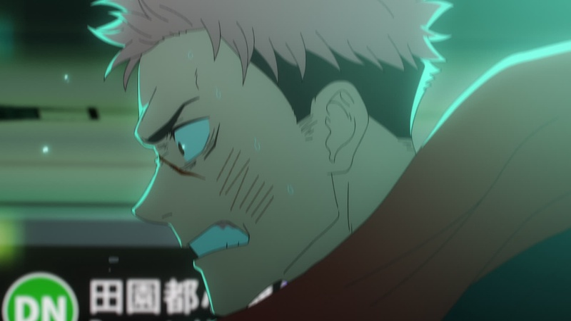
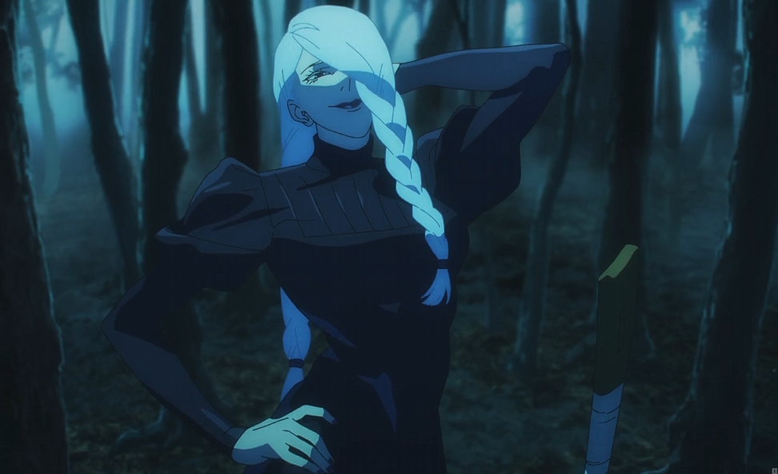
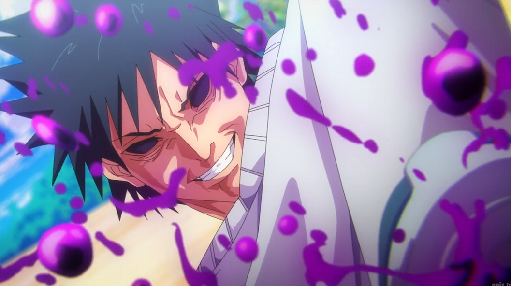
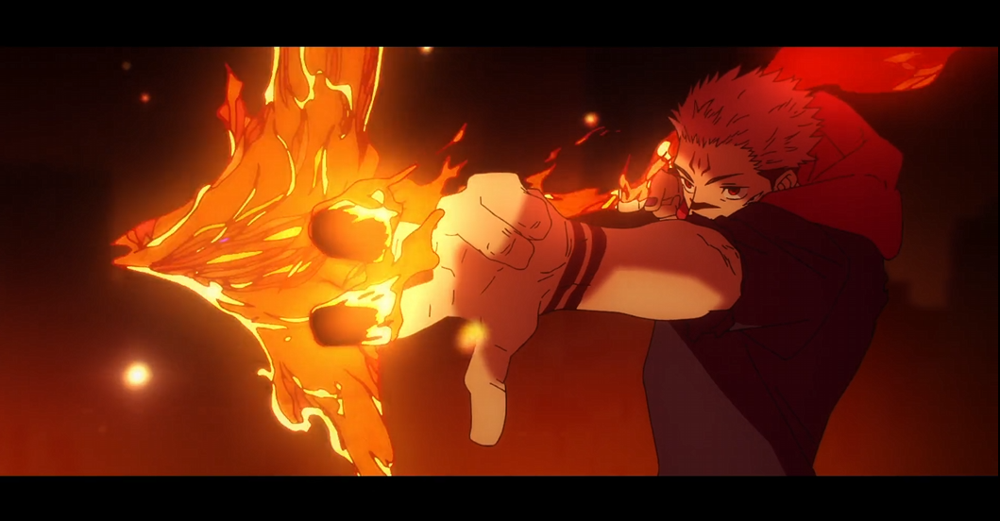
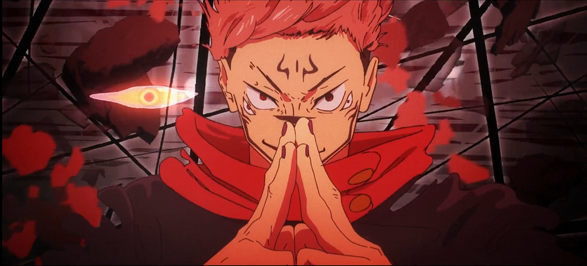
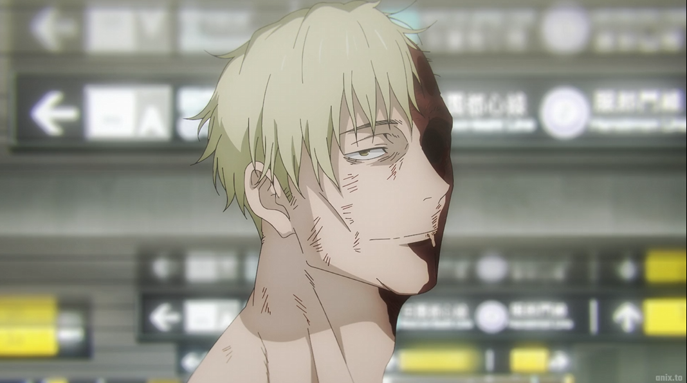
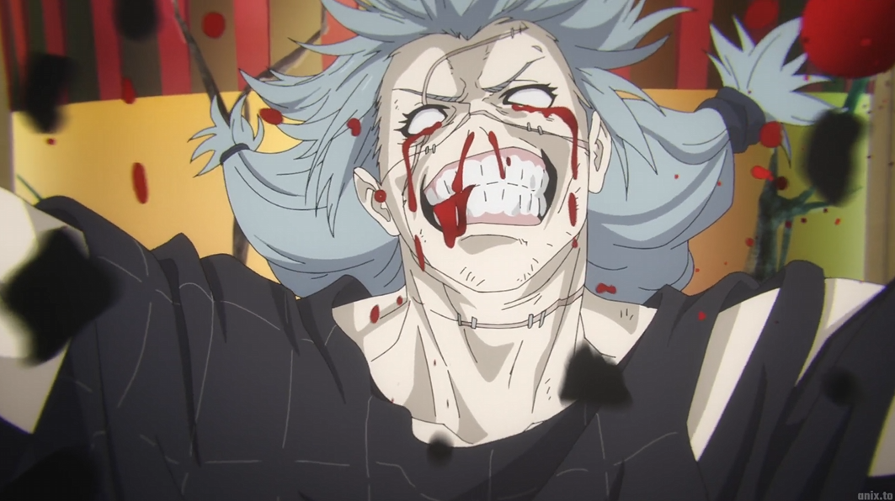
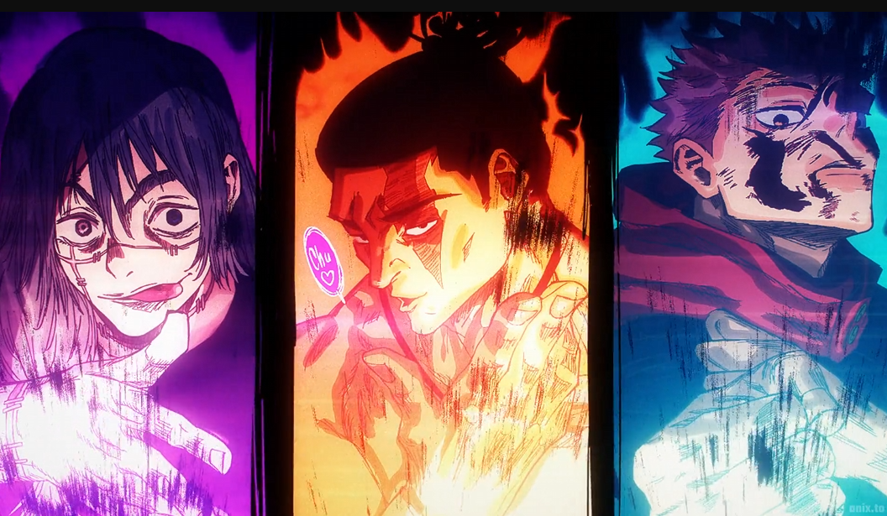
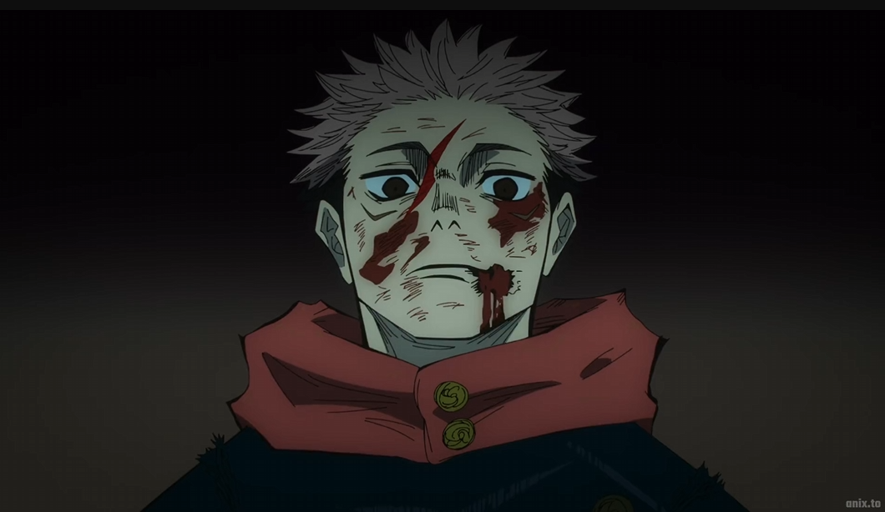
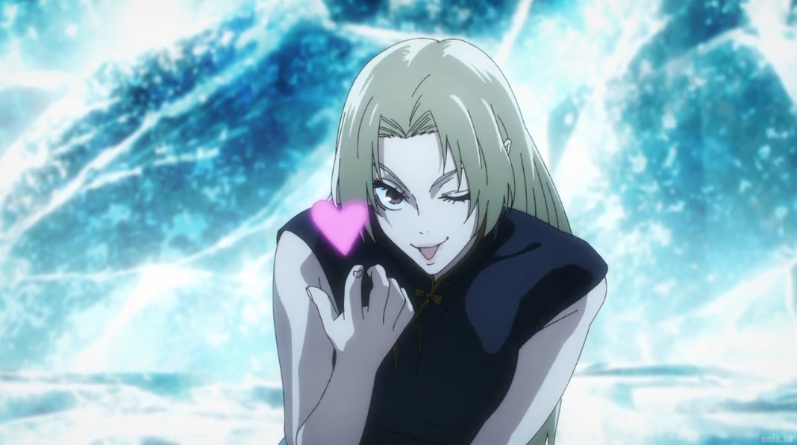

Great fight, not the best animation but the composoting was great. The hand to hand combat looked pretty good. Choso's abilities are interesting. Love seeing blood techniques in anime. The ending wasn't satisfying

Meimei is awesome, her fight was great. Fish villain looks and is lame, fight looked fine. Character models looked off a few noticeable times, mostly for maki. My King Toji showed up at the end to reek havoc.

Toji is the best, his ability translates perfectly to interesting animated fights. Easily the best character to watch fight. The villain is pretty lame, but toji easily makes up for it. All the of the sukuna scenes with Jogo and the 2 girls were interesting!

Toji Supremacy! Everything hes in is ALWAYS interesting and my favorite scenes. Real ass dead beat dad! Megumi gets another questionable dub, once again showing why hes a bum. Sukuna and Jogo was great, felt over the top as it should! The ending was very questionable. Sukuna came off as a anti-hero, which I didnt personally enjoy. The final clash panel was amazing, if it clashed it would have been better. Im tired of the blonde hair dude, feels like his only purpose in the show is to activate specific plot points when necessary.

Megumi got a good technique, sucks its behind a boring character. Using that shadow monster vs the blonde hair dude is hilarious. Considering he just got done fighting someone considerablly stronger. Is the shadow subjugated now? The fight was over the top, animation was great in most cases off in others. Plot wises a good development for itadori finally. Megumi surviving after using a technique that has been forshadowed as something that would kill him, gives off Guy surviving after going 8 gates. Nanami stocks are low already, hopefully he does not go out sad.

tough one to rate. Nanami went out bad. Did nothing the whole arc, was hoping hed off himself (thought mahito would try to turn him into a zombie) or try to attack mahito before he died. Why not turn him into a transfigured human? Oh well, happy hes gone. Itadori getting a power of friendship/memories power up before fighting half of mahito makes the power scaling a little confusing between demon and sorcers. Nobara fighting the other half of mahito espically makes the power scaling confusing. Getting golded by the blonde hair dude and now fighting half mahito seems like a crazy jump to be honest. Should be an easy wash for mahito, but we'll see. The animation was really good, the hand to hand stuff was great.

Nobara episode, not much else needs to be said. Her fighting a weakened enemy and attribute advantage is trash. Her fight wasnt that interesting, boring flashback, inshallah shes dead. I dont think she is because she didnt explode or turn into a disfigured human off the bat like nanami but well see. Maybe something about half of mahito wasnt strong enough to transfigure her. We shall see.

All the fighters were great. Mechamaru finally died, dont care for him but that scene was still awesome. King Todou was the highlight by far, fire speech, the animators love him clearly. Itadori doesnt have that dog in him, not surprised though. The healing dude hella convenient, I know he saved nobara. I dont remember him in the training arc previously.

Action packed episode that looked good pretty much the whole time. Mahito using the same domain expansion technique Gojo did against them was clever. Whatever explanation they were doing mid way through that did confuse me a little though. Todou being defeated was great, because instead of faking a death its less of an ass pull if he's just in a "knockdown" state instead of "presumbly dead". Mahito's transformation is ugly im not gonna lie. Todou coming in with a fake out clap was PEAK. Itadori not killing mahito and just walking towards him was pissing me off, I knew some bs was about to happen. Lets see if they fuse or something. Mahito went out BAD, but he was a lame villain anyway.

Good epsiode overall. I think the sword dude is tripping about itadori but hes a no one anyone. The MeiMei scene is a 10/10 FOR SURE, glad she dipped outta there. She teasing the downfall of japan, im assuming ginraku told her the plan maybe. Choso is awesome, his love for his brothers is great. All the side characters coming in, didnt do much but nice to see. Ginraku became more interesting with the shit they revealed this episode. Yuki's entrance was cool, lets see if she can hold it down and finish the season off strong.